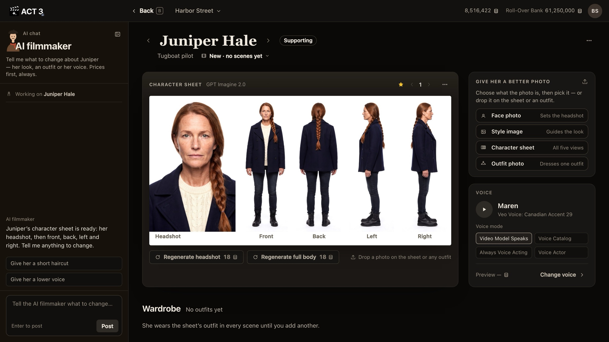
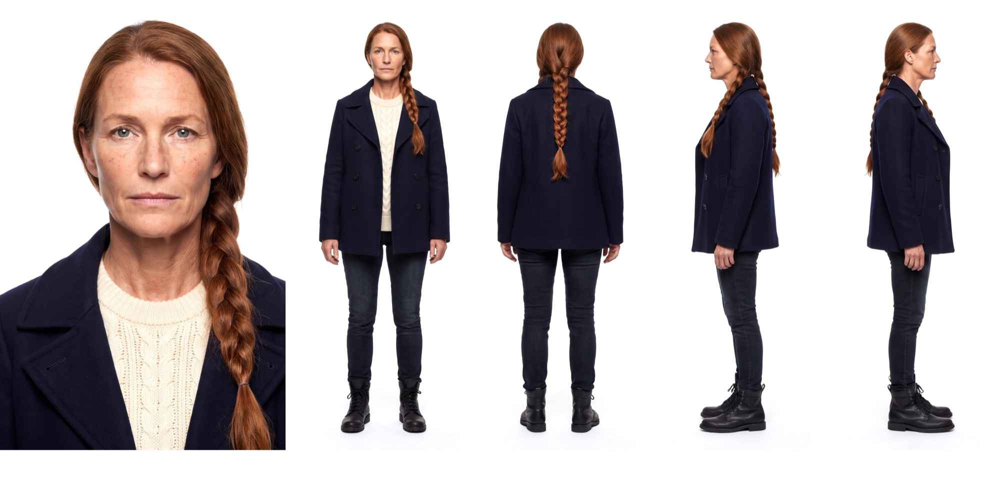

Step 6 of 8
Check the five views
Read the sheet left to right: headshot, then front, back, left and right. Check that the face, hair and clothes match in all five. If one part is off, regenerate just that part.

What to check, like a cinematographer

- The face. Is the headshot the person you described? The same eyes, freckles and age should show in the front view.
- The hair from every side. The back view is the one the camera sees over a shoulder. Here the braid runs down the back, as written.
- The costume. Every view should wear the same clothes, down to the boots. That is the outfit the character wears in every scene until you add another in the Wardrobe.
- The build and posture. All four bodies should be the same height and shape.
Your decision: keep it, remake a part, or change the look
It looks right: you are done. Version 1 is starred, so every new shot uses it.
One part is off (a body view does not match the face, say): click Regenerate headshot or Regenerate full body, 18 credits each. Each makes a new version; the old one stays in the version stepper.
You want a different look (new hair, older, another coat): change it in the Image Builder. The next two steps show how.